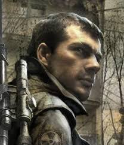
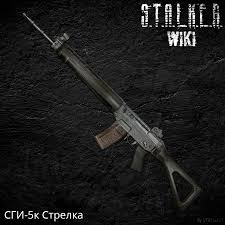

Вступление(Зов Припять)
После взрыва в Чернобыле появилась зона.На иследрование полетело 7 вертолётов но не один не вернулся.На выяснение причины подение вертолётов послали вас.
Главный герой
Вы Майор СБУ Дегтярёв Вы Прибыл для расследования провала операции «Фарватер».И вы должны обыскать все вертолёты и дойти до припяти и улитеть на спасательном вертолёте или остатся в зоне.
Пасхалки
В Затоне на КПК(карте)вы можите увидить букву 'Т' там есть говорящий контролёр в пещере.В окресности завода'Юпитер' есть пасхалка телепорт
там есть говорящий контролёр в пещере.В окресности завода'Юпитер' есть пасхалка телепорт
Редкие вещи
В окресности завода 'Юпитера' можно найти оружие Стрелка